6/11/26 - Shimanto River
After waking at 4:30 am from my free campsite next to the Shimanto river in the small city of the same name, then catching the 6:52 am bus as its sole passenger from the town center, I found a bridge to cross and put in the raft. This river is highly regarded in Japan and I thought it was very similar to the Niyodo in color and clarity except with a slower current. In fact, a much slower current. A good portion of the paddle down river was lake-like and slow going. It was still fun nut it had me yearning for more currents and excitement. The river could make for a nice relaxed overnight camping trip as there are many flat river banks from which to camp on. Unlike the Niyodo, the road alongside the river has much less traffic and out of sight behind vegetation so there is more of an in the wild feeling though cars can still be heard, and houses and bridges seen all along the way.
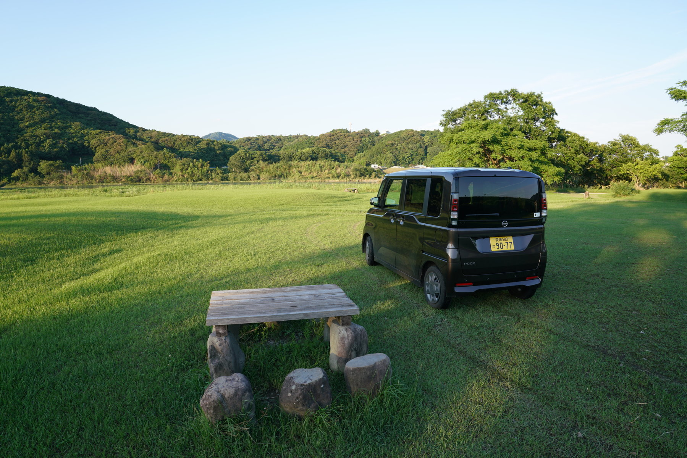
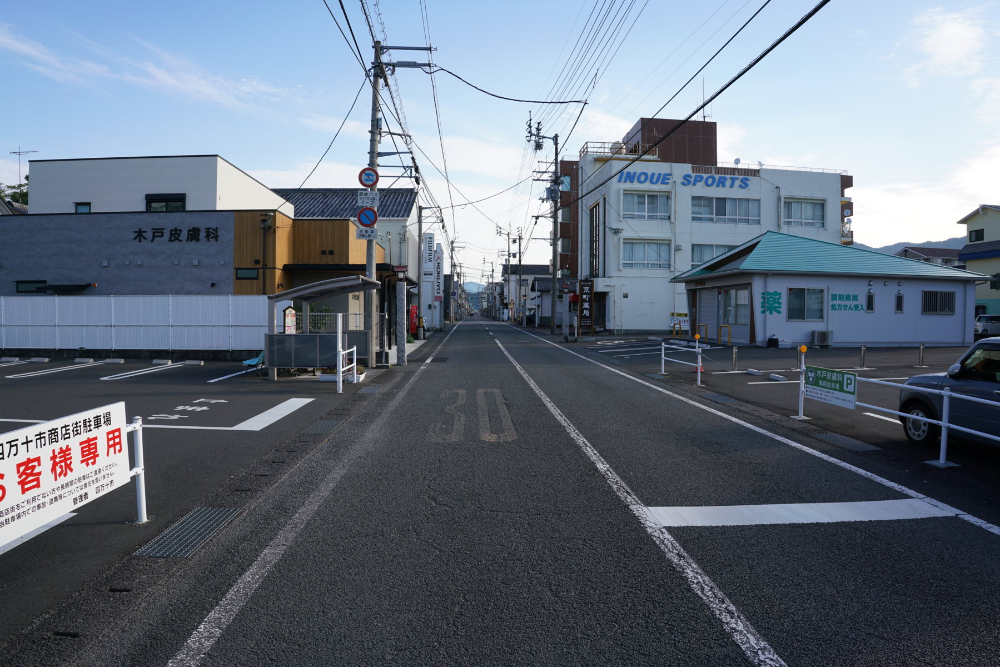
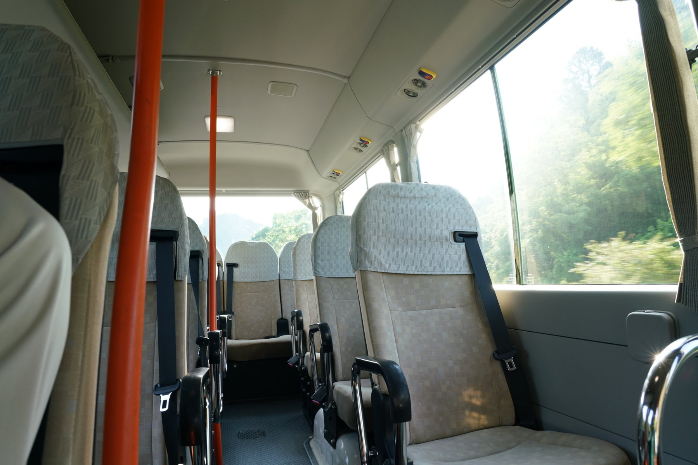
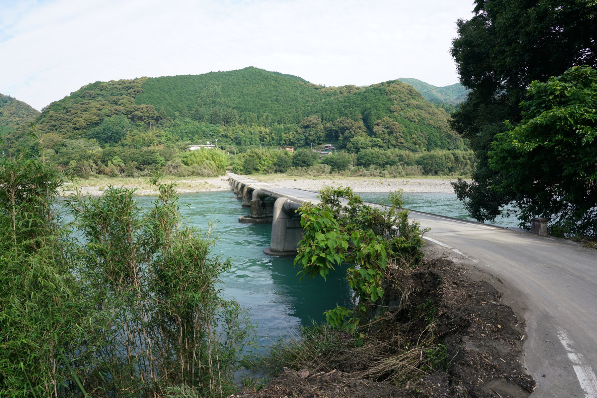
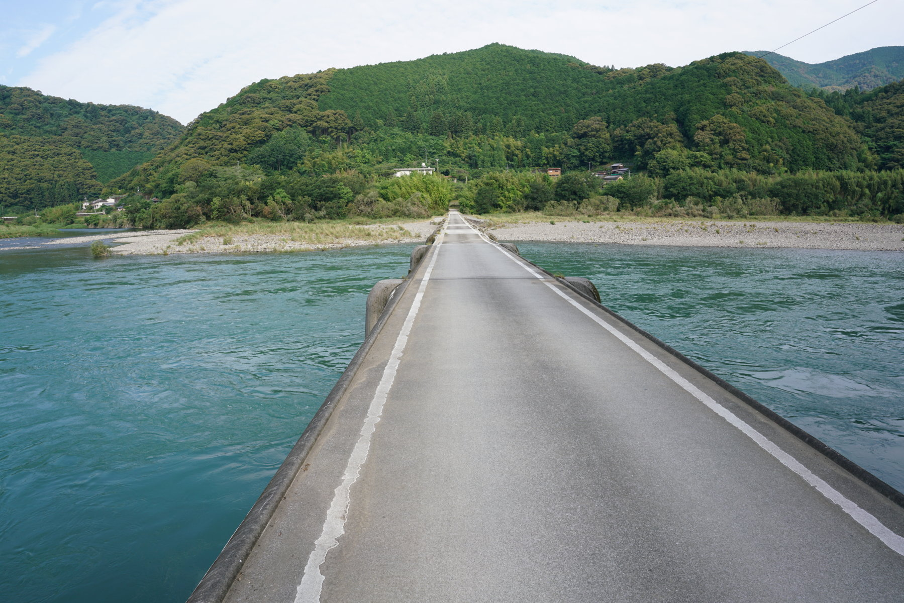
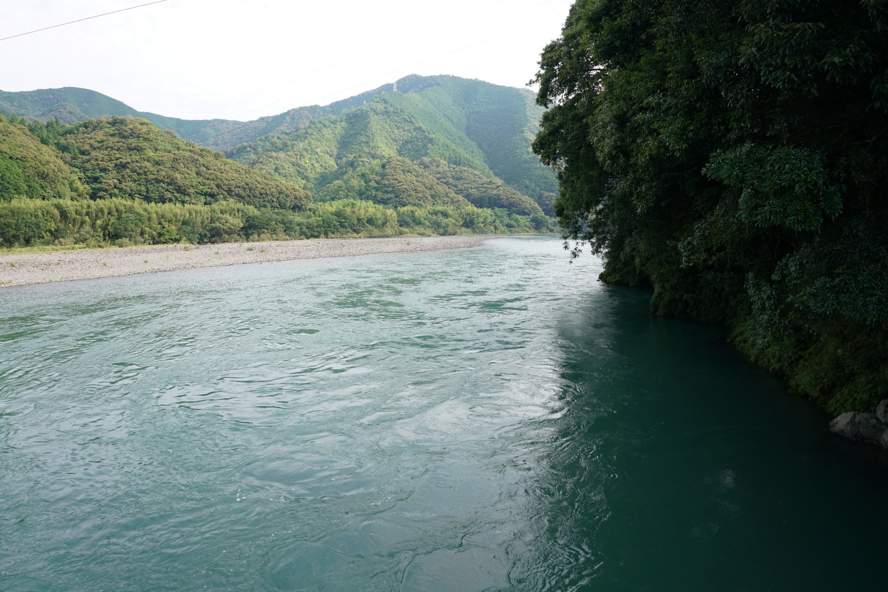
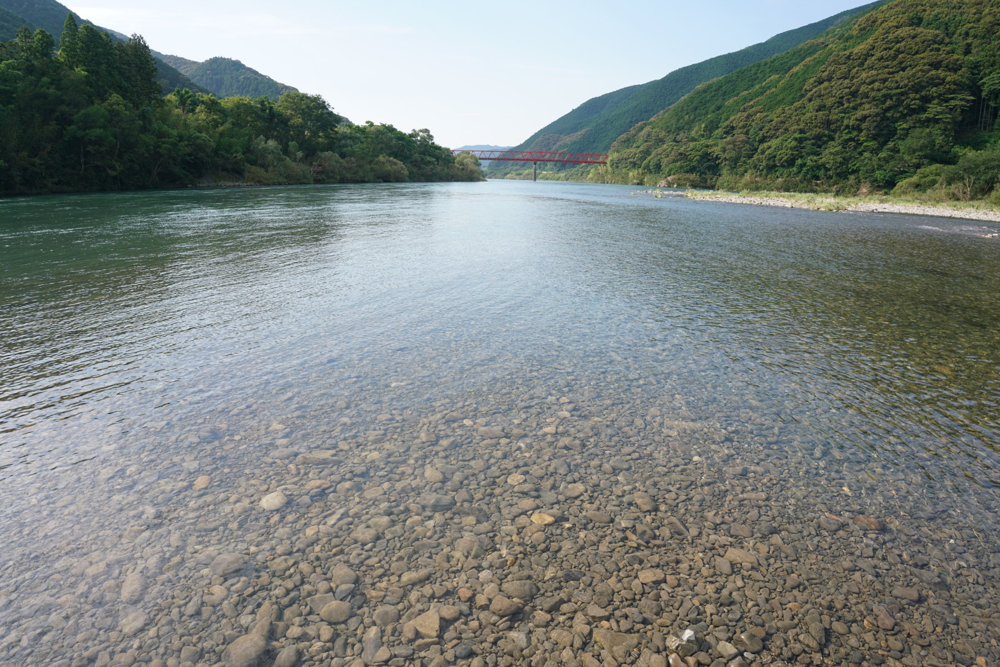
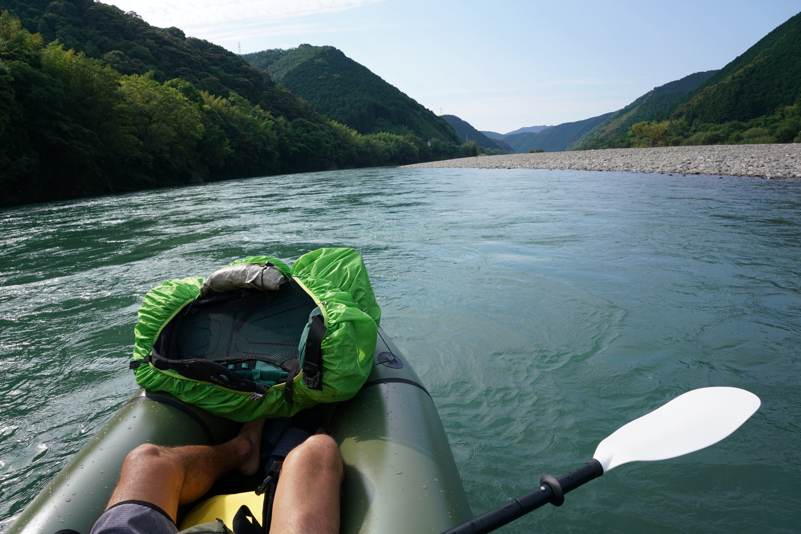
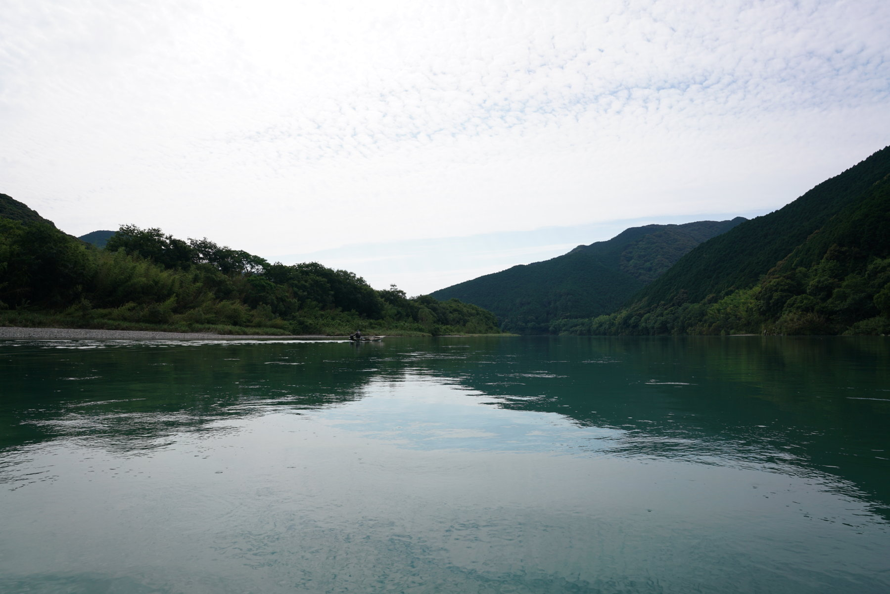
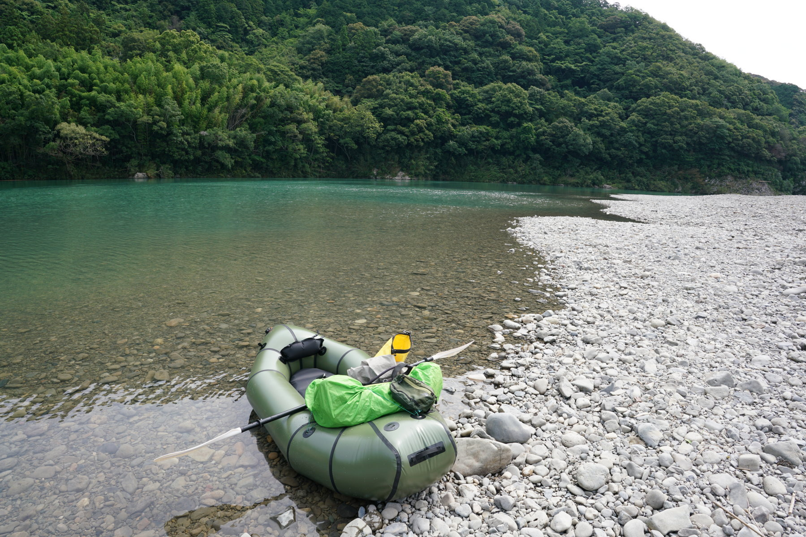
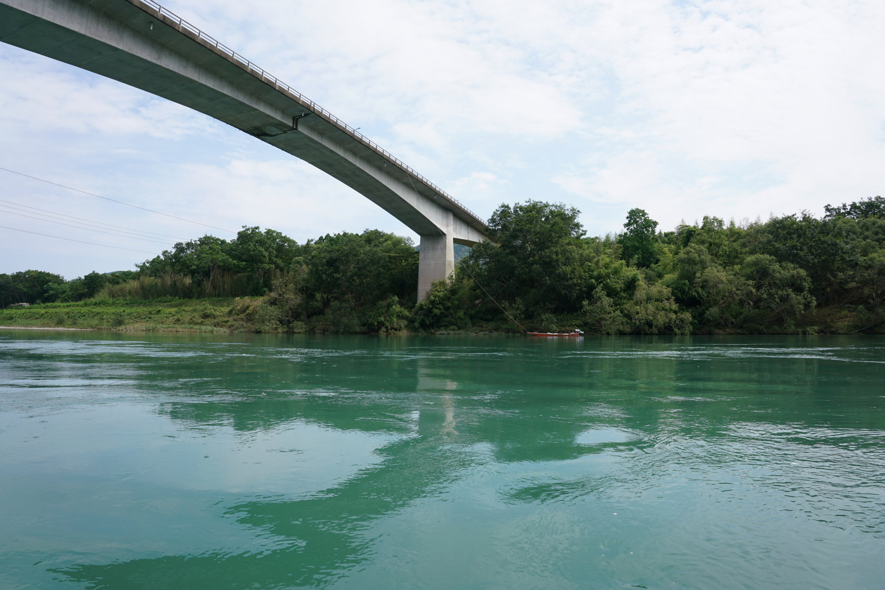
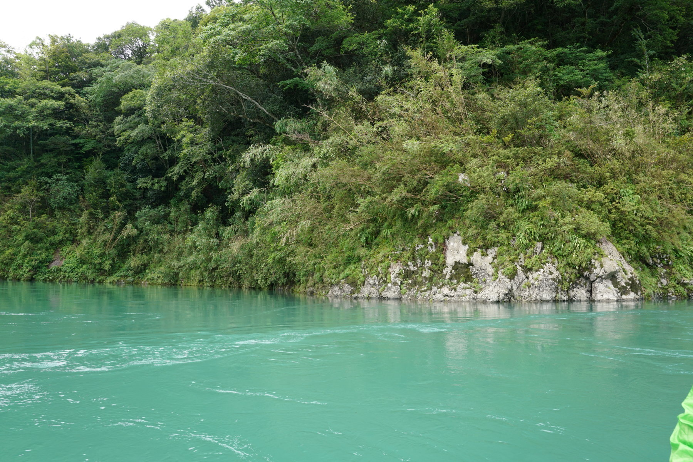
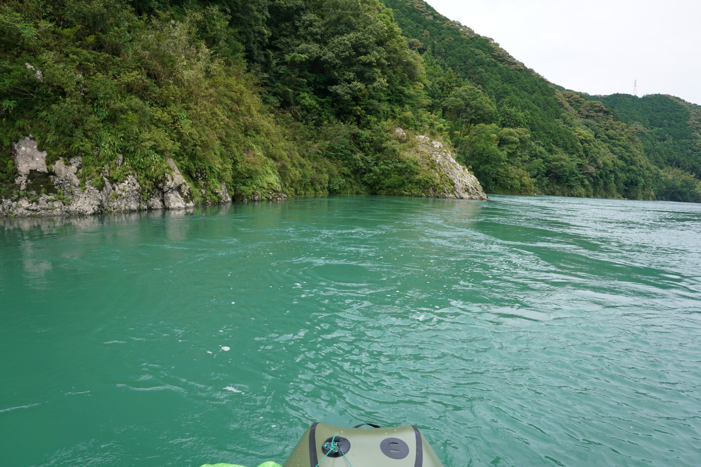